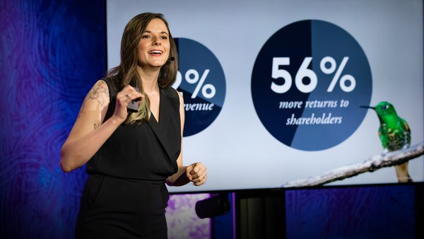

Loading…
Mariana Prieto
Why animals need design
Previous talk
Play
Pause
Next talk
Volume
0:00
/
6:29
Subtitles
Show talks
Full screen
Open on TED.com
Exit full screen
Mute
Mute

6:29
Mariana Prieto: Why animals need design
Get personal recommendations and the newest TED ideas sent straight to your inbox
Sign up now
Rewatch